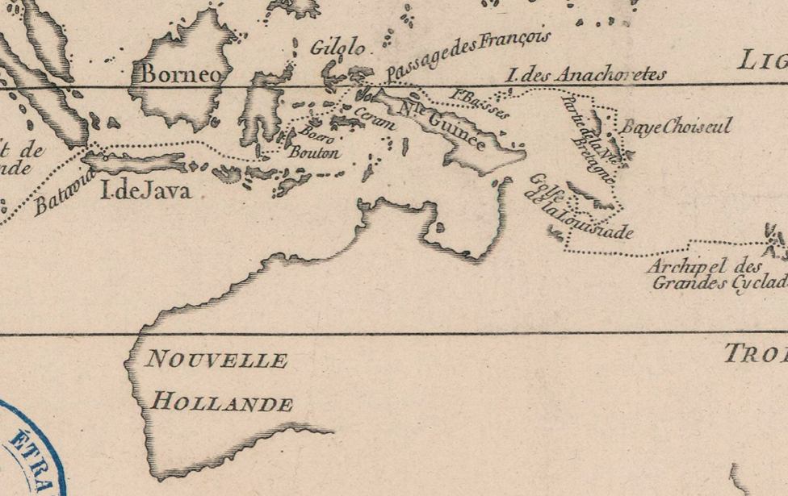
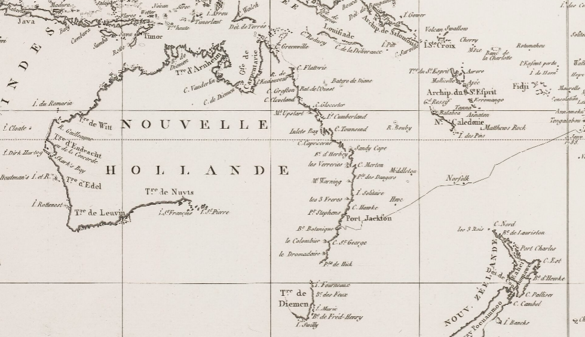
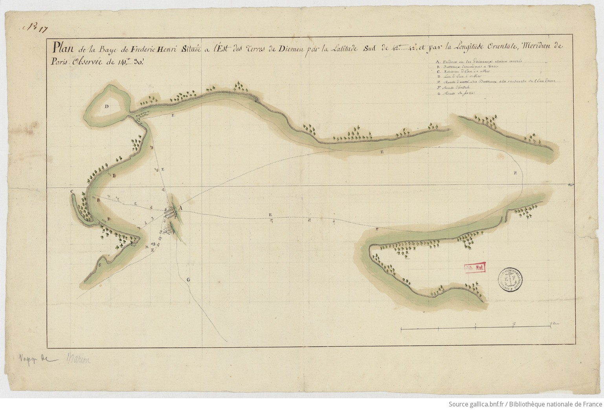
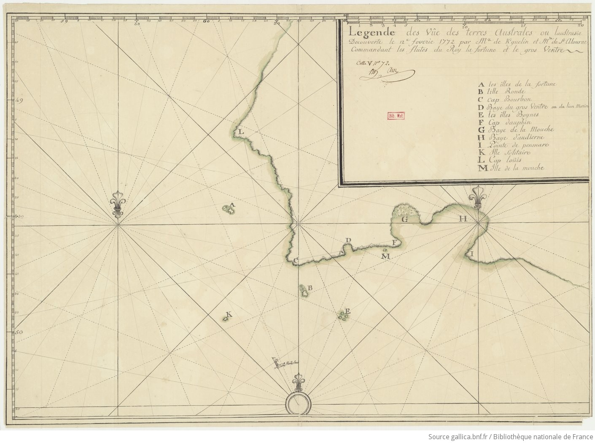

2. Earlier French voyages and the ‘discovery’ of sections of the Australian coast
The d’Entrecasteaux and Baudin expeditions must be read within a longer chronology of French navigation in the South Seas, marked by the search for new lands and by the enduring hypothesis of a southern continent. In the second half of the eighteenth century, this horizon was shaped by scientific institutions, naval priorities, and state-sponsored voyages. In that context, exploration was no longer understood as an isolated feat, but as a program combining hydrography, natural history, and strategic information-gathering.
Two major expeditions framed this prehistory: Bougainville (1766-1769) and La Perouse (1785-1788). Both were central in French maritime culture, yet their direct contribution to detailed knowledge of Australian coastlines remained limited. Bougainville navigated the western edge of the Great Barrier Reef without charting the Australian shore itself, while La Perouse, after reaching Botany Bay in 1788, did not undertake sustained coastal surveys there.

Développement de la route faite autour du monde par les vaisseaux du roi La Boudeuse et L’Étoile, by Louis-Antoine de Bougainville, 1771. Detail of the route of La Boudeuse and L’Étoile (dotted line). Bibliothèque nationale de France. http://catalogue.bnf.fr/ark:/12148/cb40583576b

Atlas du voyage de La Pérouse, detail with the route of La Boussole and L’Astrolabe, 1797, Bibliothèque nationale de France. https://gallica.bnf.fr/ark:/12148/btv1b52524841g/f18.item, http://catalogue.bnf.fr/ark:/12148/cb40617185w
Marion Dufresne on the eastern coast of Tasmania (1772)
Marc-Joseph Marion Dufresne sailed from Isle de France (Mauritius) in October 1771 with the Marquis de Castries and the Mascarin. The expedition combined diplomatic and exploratory objectives: the return of Aotourou toward Polynesia and reconnaissance in southern waters. After accidental damage to both vessels, Marion put in on the eastern coast of Van Diemen’s Land (Tasmania) in March 1772 to refit and obtain water.

Plan de la baye de Frederic Henri située à l’est des terres de Diemen... 1772, Bibliothèque nationale de France. http://catalogue.bnf.fr/ark:/12148/cb476872084
The encounter with Aboriginal Tasmanians deteriorated rapidly under conditions of linguistic and cultural misunderstanding, and violence followed. No French toponyms from this episode were formally integrated into later national hydrographic nomenclature. Even so, this stopover entered the documentary memory of subsequent French navigators as a cautionary case concerning coastal contact and local interpretation.
Saint-Aloüarn on the western coast of New Holland (1772)

Vûe des Terres australes ou laustrasie découverte le 12e feverie 1772 par Mr. de K[er]guelin et Mr de St. Alourne commandant les flûtes du Roy La Fortune et Le Gros Ventre, 1772, Bibliothèque nationale de France. http://catalogue.bnf.fr/ark:/12148/cb443660634
In the same year, the expedition of Kerguelen and Saint-Aloüarn produced the most substantial French reconnaissance on the western seaboard before d’Entrecasteaux. After separation at sea, Saint-Aloüarn continued eastward and reached the coast near Cape Leeuwin in March 1772, then proceeded northward to Dirk Hartog Island. There he organized a ceremony to claim possession of the land and another to bury one of his crew members who had likely died of scurvy.
These operations did not lead to durable political occupation; nor did all proposed names survive in published atlases. Their significance lies elsewhere: they provided route knowledge, coastal bearings, and procedural precedents later revisited by French hydrographers. For d’Entrecasteaux and Baudin, earlier French traces along the Australian coast became points of comparison in a cumulative cartographic method aimed at improving chart reliability through successive observations.
2. Les voyages français dans les mers australes avant d’Entrecasteaux et Baudin
Les voyages de d’Entrecasteaux et de Baudin s’inscrivent dans une tradition d’explorations françaises dont le principe structurant fut la cartographie des terres australes de l’hémisphère Sud. Dans la seconde moitié du XVIIIe siècle, cet horizon est porté par les institutions savantes, les priorités navales et les expéditions commanditées par l’État. L’exploration ne relève plus seulement de l’exploit : elle devient un programme scientifique associant hydrographie, histoire naturelle et collecte d’informations utiles à la puissance maritime.
Deux grandes expéditions encadrent ce moment préparatoire : celles de Bougainville (1766-1769) et de La Pérouse (1785-1788). Leur importance dans la culture nautique française est majeure, mais leur apport direct à la connaissance détaillée des côtes australiennes demeure limité. Bougainville longe le bord externe de la future Grande Barrière sans lever systématiquement la côte australienne ; La Pérouse, après son arrivée à Botany Bay en 1788, n’y organise pas de campagne prolongée de relevés côtiers.
Développement de la route faite autour du monde par les vaisseaux du roi La Boudeuse et L’Étoile, Louis-Antoine de Bougainville, 1771. Détail de la route de La Boudeuse et de L’Étoile (ligne pointillée). Bibliothèque nationale de France. http://catalogue.bnf.fr/ark:/12148/cb40583576b
Atlas du voyage de La Pérouse, détail montrant la route de La Boussole et de L’Astrolabe, 1797. Bibliothèque nationale de France. https://gallica.bnf.fr/ark:/12148/btv1b52524841g/f18.item ; http://catalogue.bnf.fr/ark:/12148/cb40617185w
Marion Dufresne sur la côte orientale de la Tasmanie (1772)
Marc-Joseph Marion Dufresne (1724-1772), négociant et planteur établi à l’Île de France (Maurice), servit à la fois comme officier bleu dans la Marine royale et comme capitaine au service de la Compagnie française des Indes orientales. À l’invitation de l’intendant de l’île, Pierre Poivre, il appareilla le 18 octobre 1771 à la tête de deux bâtiments, le Marquis de Castries et le Mascarin. L’expédition répondait à un double objectif.
Le premier consistait à reconduire le Polynésien Aotourou dans sa patrie. Emmené en France depuis Tahiti par Bougainville, celui-ci avait été ensuite dirigé vers l’Île de France, avec mission confiée à Poivre d’organiser la dernière étape de son retour vers Tahiti. Le projet demeura inachevé : Aotourou mourut de la variole à Madagascar le 6 novembre 1771, avant d’avoir pu regagner son île.
Le second objectif visait la reconnaissance des régions australes des océans Indien et Pacifique. Poursuivant sa route vers l’est, Marion Dufresne dut affronter les aléas d’une navigation lointaine : ses deux navires entrèrent en collision en haute mer, subissant d’importantes avaries. Il résolut alors de relâcher, le 4 mars 1772, sur la côte orientale de la Terre de Van Diemen (Tasmanie), afin de remâter l’un des bâtiments et de refaire les provisions d’eau douce.
Plan de la baye de Frederic Henri située à l’est des terres de Diemen, 1772. Bibliothèque nationale de France. http://catalogue.bnf.fr/ark:/12148/cb476872084
La rencontre avec les Aborigènes de Tasmanie se déroula dans un climat d’incompréhensions réciproques et tourna rapidement à la violence : des pierres furent lancées contre les membres de l’équipage, qui ripostèrent par des tirs d’armes à feu, causant la mort d’au moins un autochtone. Quelques semaines plus tard, en Nouvelle-Zélande, Marion Dufresne fut lui-même tué, avec plusieurs de ses compagnons, lors d’un affrontement avec des Maoris.
Aucun lieu australien ne fut nommé ni revendiqué par les Français au cours de ce voyage, qui n’en constitue pas moins un jalon significatif dans l’histoire des navigations françaises vers les mers australes.
Saint-Aloüarn sur la côte occidentale de la Nouvelle-Hollande (1772)
La même année, une autre expédition française fut placée sous le commandement d’Yves Joseph de Kerguelen de Trémarec (1734-1797), chargé par le roi Louis XVI de rechercher la mystérieuse « Terre australe ». Kerguelen naviguait à bord de La Fortune, tandis que son second, Louis-François de Saint-Aloüarn, commandait la gabarre Le Gros Ventre. Les deux bâtiments se séparèrent dans l’océan Indien.
Kerguelen découvrit, dans les brumes des hautes latitudes australes, un archipel qu’il crut être la Terre australe recherchée, puis regagna la France pour annoncer sa découverte ; ces îles portent aujourd’hui son nom. Conformément aux instructions reçues, Saint-Aloüarn poursuivit sa route vers l’est et aborda, le 17 mars 1772, la côte occidentale de l’Australie, à proximité du cap Leeuwin. Cette façade maritime, alors désignée sous le nom de Nouvelle-Hollande, avait déjà été reconnue au XVIIe siècle par les navigateurs néerlandais, puis par l’Anglais William Dampier (1651-1715).
Vûe des Terres australes ou laustrasie découverte le 12e février 1772 par M. de Kerguelen et M. de St. Alouarn commandant les flûtes du Roi La Fortune et Le Gros Ventre, 1772. Bibliothèque nationale de France. http://catalogue.bnf.fr/ark:/12148/cb443660634
Remontant la côte vers le nord, Saint-Aloüarn mouilla à l’île Dirk Hartog, où il donna le nom de pointe des Hauts-Fonds à l’extrémité septentrionale de la presqu’île. Il y organisa une cérémonie de prise de possession au nom du roi de France, ainsi qu’une sépulture pour l’un de ses matelots, Massicot, vraisemblablement mort du scorbut.
Aucune mesure ne fut prise par la monarchie française pour transformer ces gestes symboliques en occupation effective du territoire.
Ces opérations ne débouchèrent ni sur une occupation politique effective ni sur la conservation de l’ensemble des noms proposés dans les atlas publiés ultérieurement. Leur portée est d’un autre ordre : elles fournissent des repères de route, des alignements côtiers et des précédents opératoires repris par les hydrographes français. Pour d’Entrecasteaux puis Baudin, les traces françaises antérieures sur le littoral australien deviennent des points de comparaison dans une méthode cumulative de correction cartographique fondée sur la répétition des observations.